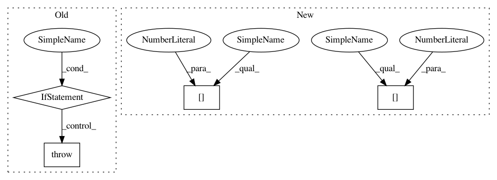

d8f1240c733c32c117b89fc14a6653f93b84f551,coremltools/converters/nnssa/coreml/ssa_converter.py,SSAConverter,_convert_conv2d,#SSAConverter#Any#,1497
Before Change
dilations = node.attr.get("dilations", [1, 1, 1, 1])
// TF uses SpaceToBatch to implement dilated convolutions
if any([df != 1 for df in dilations]):
raise NotImplementedError(
"[SSAConverter] Dilated Convolution not implemented")
assert len(weight.shape) == 4, "Conv2d: weight parameter not rank 4"
data_format = node.attr.get("data_format", "NHWC")
After Change
if paddings_before:
layer = builder.add_padding(
name=node.name + "_paddings_before",
left=paddings_before[0],
right=paddings_before[1],
top=paddings_before[2],
bottom=paddings_before[3],
value=0,
In pattern: SUPERPATTERN
Frequency: 3
Non-data size: 4
Instances
Project Name: apple/coremltools
Commit Name: d8f1240c733c32c117b89fc14a6653f93b84f551
Time: 2019-12-19
Author: yuduo@apple.com
File Name: coremltools/converters/nnssa/coreml/ssa_converter.py
Class Name: SSAConverter
Method Name: _convert_conv2d
Project Name: apple/coremltools
Commit Name: d8f1240c733c32c117b89fc14a6653f93b84f551
Time: 2019-12-19
Author: yuduo@apple.com
File Name: coremltools/converters/nnssa/coreml/ssa_converter.py
Class Name: SSAConverter
Method Name: _convert_conv2d
Project Name: apple/coremltools
Commit Name: d1e6e624ef891543c5bba32bb0a696d350714693
Time: 2019-08-20
Author: smq@apple.com
File Name: coremltools/models/utils.py
Class Name:
Method Name: _convert_nn_spec_to_half_precision
Project Name: apple/coremltools
Commit Name: 43656e4ec4052c705ac28b675bd151cba0c344a9
Time: 2019-10-04
Author: yuduo@apple.com
File Name: coremltools/converters/nnssa/coreml/ssa_converter.py
Class Name: SSAConverter
Method Name: _convert_batch_to_space_nd